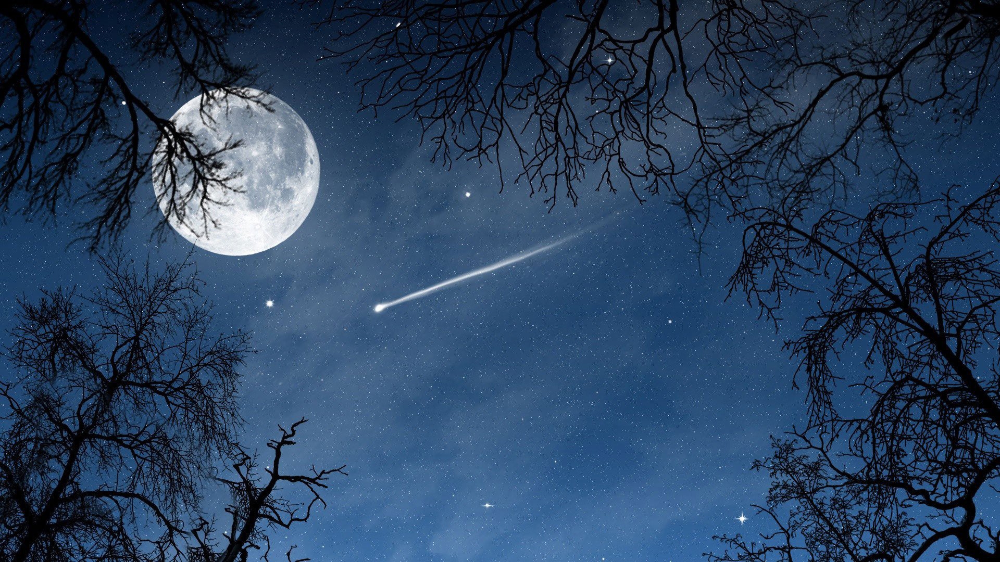
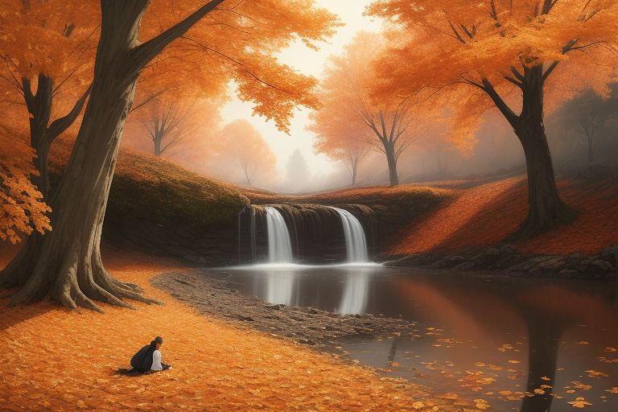
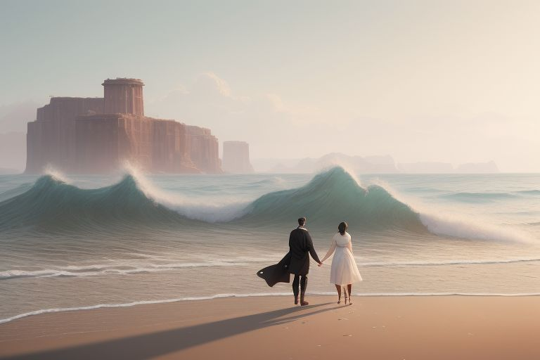
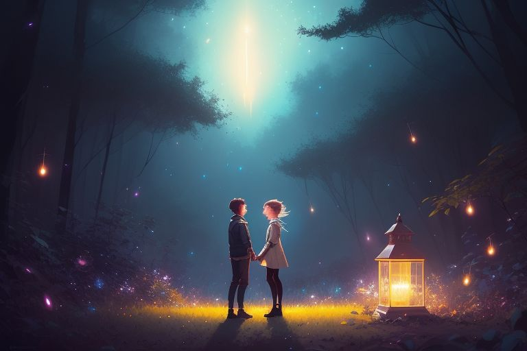
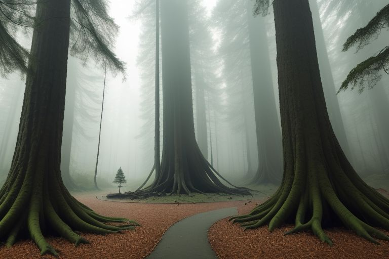
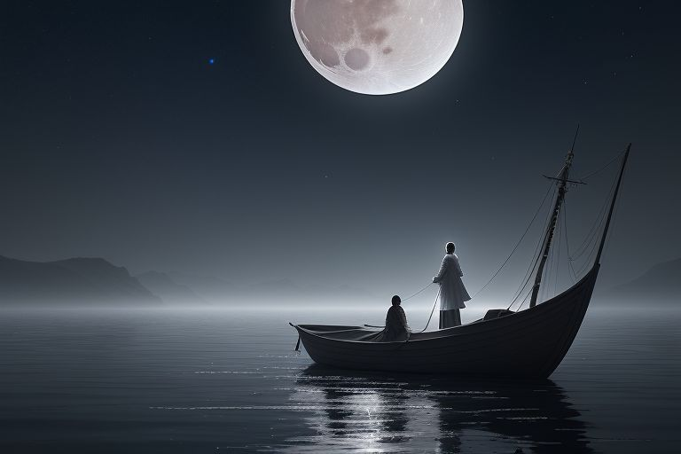
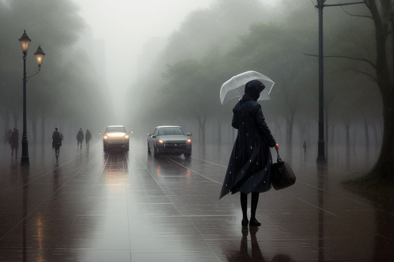
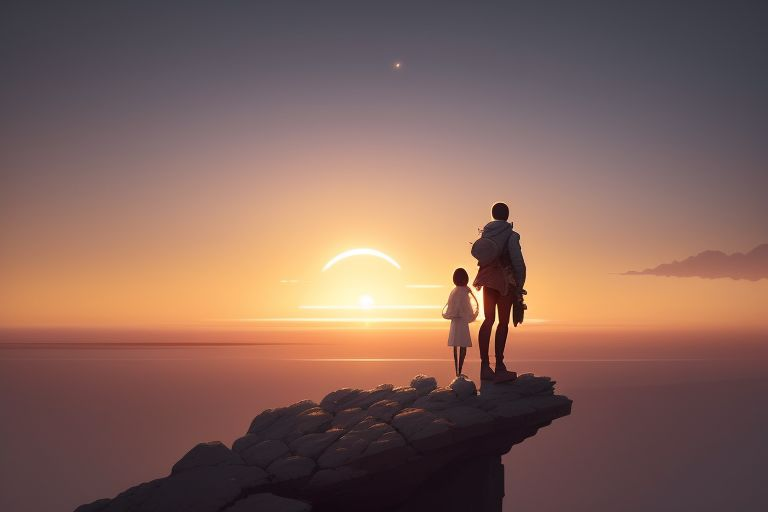
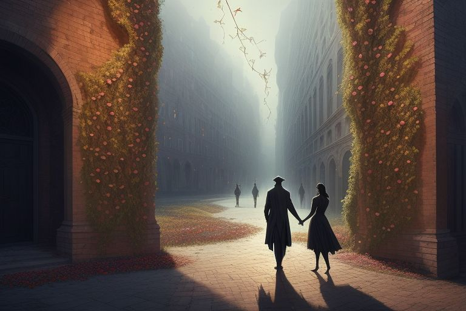

Welcome to Echoes of the Soul, a haven where words transcend their
ordinary form to weave intricate tapestries of emotion. In this space,
poetry serves as a bridge between the unsaid and the deeply felt,
capturing the quiet moments of life that often go unnoticed. Every
verse is a reflection of the human experience—vulnerable, raw, and
honest. Here, you'll find a collection of poems that delve into the
subtle nuances of love, loss, solitude, and the delicate beauty found
within them. Each word is carefully chosen to evoke feelings that
resonate long after the lines have been read.
Through my poetry, I offer a glimpse into the depths of the heart,
where emotions linger in the shadows and emerge in soft whispers. Love
is celebrated, mourned, and transformed, while loss becomes a space
for reflection and growth. Solitude, often seen as emptiness, is
embraced as a source of strength and inner peace. In these verses, you
may find echoes of your own heart's desires, pains, and hopes. This
space is not just a platform for my own expression, but an invitation
for you to explore your own emotions alongside mine.
Poetry Blogs
Poetry lets us see the world differently. The moon, often
overlooked, becomes a guide in our nighttime journey. How do you
feel when you gaze up at the sky?
Whispers of the Moonlit Sky
Exploring the Night's Embrace Through Poetry
In the stillness of the night, the moon speaks to those who
listen. In this post, I invite you to journey with me through
poems that capture the delicate whispers of the moonlit sky. Let
the darkness illuminate the emotions hidden deep within.

The stars, they hum, a quiet song,
To those who've wandered far too long.
In midnight's arms, they softly glow,
A light for those who’ve lost their way below.
Each twinkle sings of dreams once known,
Of hearts that ache and roam alone.
The sky, a canvas brushed in night,
Guides weary souls toward distant light.
Echoes of Autumn's Breath
Whispers of Change in the Fall Winds
As the autumn leaves swirl in the wind, a quiet reflection of
change takes place. Join me in this journey through verses that
capture the crispness of autumn’s embrace and the transformation
of nature.

The wind whispers through the trees,
A song of change, of shifting seas.
The amber leaves fall with grace,
As autumn paints the earth’s embrace.
In the cool breeze, the earth exhales,
And nature’s tale, it softly sails.
A fleeting moment, a quiet sigh,
As autumn’s breath bids summer goodbye.
Waves of Time
Riding the Tides of Memory and Change
Time is like the endless sea, with waves crashing upon the shores
of memory. This poem explores the moments that ebb and flow in our
lives, leaving traces in the sands of time.

The ocean calls with whispers deep,
Of memories lost and secrets to keep.
Each wave a story, each crash a sound,
Of moments past that will never be found.
Time drifts like a boat on the tide,
Carrying dreams with nowhere to hide.
The waves they whisper, the winds they sigh,
As moments fade like clouds in the sky.
Chasing Fireflies
The Magic of Night and the Sparkle of Dreams
In the glow of fireflies, we find glimpses of fleeting beauty and
magic. This poem celebrates the chase for dreams, however
transient, in the twilight hours.

The fireflies dance in the air,
A flicker of light beyond compare.
Chasing dreams with wings so bright,
Through the quiet, dark of night.
Each spark a wish, a fleeting hope,
A light to help us learn to cope.
In the dark, we chase and strive,
As the fireflies make dreams alive.
The Silent Forest
Whispers of the Earth Amongst the Trees
There is wisdom in the silence of the forest, where the trees
speak through their roots and leaves. This poem invites you to
listen to the quiet stories held in the heart of nature.

The trees stand tall with ancient grace,
In the quiet earth, they find their place.
The forest hums a secret song,
Where shadows and light both belong.
In the stillness, there’s a voice,
The earth’s own song, a quiet choice.
The forest speaks without a sound,
Its wisdom deep, yet all around.
Moonlit Serenade
Melodies Under the Silver Light of the Moon
The moon casts its glow upon the world, inviting quiet reflection
and romance. Let this poem carry you into the night where every
shadow is bathed in silver light.

Under the moon’s soft silver light,
The world stands still, a calm in the night.
The stars sing softly, the wind is kind,
A serenade to ease the mind.
In the quiet, hearts find their way,
As the moonlight begins to sway.
A symphony played without a sound,
In the darkness, peace is found.
Threads of Fate
Weaving the Tapestry of Life and Choices
Life is woven with threads of decisions, some we choose, others we
find ourselves caught in. This poem explores the delicate balance
between fate and free will.
The threads of fate twist and wind,
Between the heart and the restless mind.
Choices made and paths that fade,
We walk the line, the price is paid.
The loom of life, it pulls so tight,
Each decision, each small light.
We weave our dreams, both lost and found,
In the fabric of life, we are unbound.
Whispers in the Rain
Listening to the Songs of Storms and Tranquility
Rain carries with it a song—a melody of renewal and reflection.
This poem listens to the whispers carried by raindrops as they tap
on the earth, bringing change.

The rain it falls, a soft caress,
A soothing touch, a sweet distress.
Each drop a story, each splash a song,
Of memories forgotten, of days gone long.
In the rain, the earth begins to cry,
A song of sorrow, a lullaby.
Yet with each tear, the world is new,
As rain brings peace and skies of blue.
Wings of Dawn
Breaking the Night, Embracing the New Day
The first light of dawn carries with it a promise of new
beginnings. This poem celebrates the power of each sunrise to
spark hope and renewal.

The sun breaks through the darkened skies,
A golden promise, a new sunrise.
The wings of dawn take flight so high,
To kiss the earth and light the sky.
The darkness fades, the night is gone,
A new beginning, a brand new dawn.
With every light, a chance to grow,
As the wings of dawn begin to glow.
2. The Echoes of Lost Love
Poems from the Heart's Hidden Corners
Love leaves behind traces—sometimes sweet, sometimes bitter. In
this collection of poems, I delve into the echoes left by love,
the lingering feelings that haunt us long after the moment has
passed.

I trace the silence where your voice once lay,
Soft echoes linger, fading day by day.
The warmth we built, now threads of thin, cold air,
A fleeting memory, fragile and unfair.
The stars we chased have dulled without their glow,
Where once was love, now only shadows grow.
I search the night for pieces of your smile,
But distance keeps me lost, mile after mile.
About Us
Hello Guys! I’m Shailesh Singh,a passionate poet and front-end developer.
Words and code are my two main forms of expression, allowing me to
create beauty both on the page and on the screen. Through poetry,
I explore themes of love, loss, solitude, and the intricate beauty
of life, weaving emotions into verses that resonate with the
heart.
As a front-end developer, I enjoy crafting seamless user
experiences that bring ideas to life in the digital world. I
believe that just as a well-designed website captivates users,
poetry has the power to touch souls and evoke emotions. In both
realms, my goal is to connect with others, inviting them to pause,
reflect, and feel.
Thank you for joining me on this journey through words and
creativity. I hope you find inspiration and solace in my poetry as
we explore the depths of the human experience together!
Contact UsGet in touch!
To stay connected with us, plz fill the form or connect through bellow social media plateforms

 Poetry Blogs
Poetry Blogs